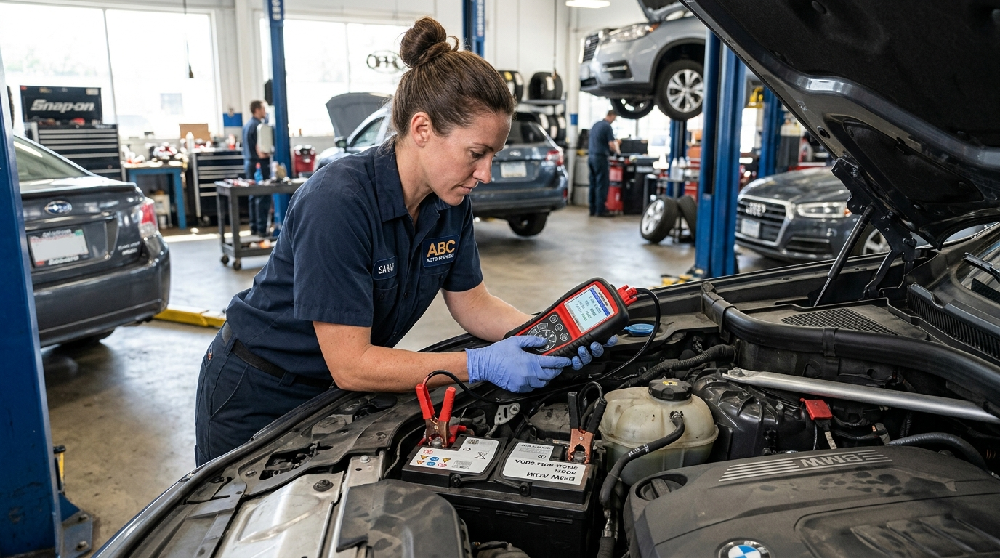

Blog de Cuidado Automotriz
Resolvemos tus dudas mecánicas habituales, te enseñamos a identificar fallas a tiempo y te damos los mejores consejos para mantener tu auto como nuevo.
Artículo Destacado de la Semana

¿Por qué chillan los frenos de mi auto? Causas, peligros y solución definitiva
Ese molesto ruido metálico al presionar el pedal no siempre significa un desastre, pero ignorarlo puede costar caro. Analizamos los motivos reales desde la cristalización de pastillas hasta el desgaste del sensor acústico.
 Por Claudio Ramírez (Jefe de Taller)
Por Claudio Ramírez (Jefe de Taller)
Últimas Publicaciones
Mostrando entradas especializadas
5 Señales de que el Aire Acondicionado de tu Auto necesita recarga de gas
¿El flujo de aire sale tibio o notas mal olor al encender el sistema? Te mostramos los síntomas claros de fugas de gas R134a/R1234yf y cuándo cambiar el filtro de polen.
 Felipe Morales
Felipe Morales

¿Cada cuántos kilómetros se debe hacer el cambio de aceite sintético?
No todos los aceites duran 10.000 km. Conoce la diferencia real entre aceite mineral, semi-sintético y sintético de alta viscosidad según el uso en la ciudad.
Claudio Ramírez

¿Cómo saber si la batería de tu auto está fallando antes de quedarte tirado?
Arranque pesado por la mañana, luces tenues o el testigo de batería encendido. Aprende a medir el alternador con multímetro antes de realizar un cambio preventivo.
 Gonzalo Fuentes
Gonzalo Fuentes

Pre-Revisión Técnica (PRT): Lista de chequeo clave para aprobar a la primera
Evita rechazos vergonzosos por gases, alineación o luces descalibradas. Te presentamos la lista definitiva que revisan las plantas de revisión técnica en Santiago.
 Carolina Soto
Carolina Soto

Cómo preparar tu vehículo para un viaje largo en carretera sin sorpresas
Revisión de presión de neumáticos (incluido repuesto), nivel de refrigerante anticongelante, suspensión y frenos antes de salir a la ruta.
Claudio Ramírez
Luz Check Engine encendida: ¿Debo detenerme de inmediato o puedo conducir?
Entiende la diferencia entre una luz ámbar fija (sensor de oxígeno, tapa de combustible) y una luz parpadeante crítica que indica riesgo de falla de motor.
Gonzalo Fuentes
Artículos Más Leídos
Recibe el Tip Mecánico de la Semana
Te enviamos consejos breves sobre cómo evitar gastos innecesarios en tu vehículo, avisos de mantención y promociones exclusivas del taller.
Cero spam. Puedes desuscribirte cuando quieras.